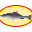

California Freshwater Fishing Map
Ever wondered where is all the fish ? Click on a marker to see details below the map.
Click on a map marker  to see details here.
Data source: DFW
map, locations, coordinates, GPS, Bass,CatFish,Salmon,Inland Salmon,Panfish,Shad,Steelhead,Striped Bass,Sturgeon,Trout Wild,Trout Hatchery,Backcountry, Trout,Lahontan Cutthroat Trout, Rainbow Trout,Golden Trout,Brown Trout,Brook Trout,Longitude,Latitude,Boat,Catch And Release
© helgasoft.com